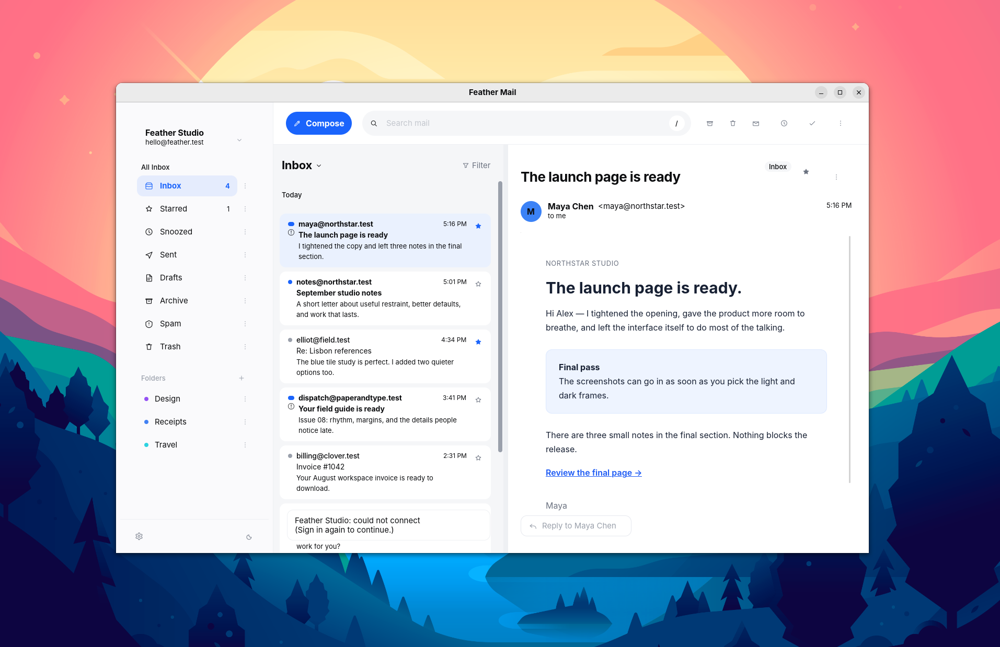
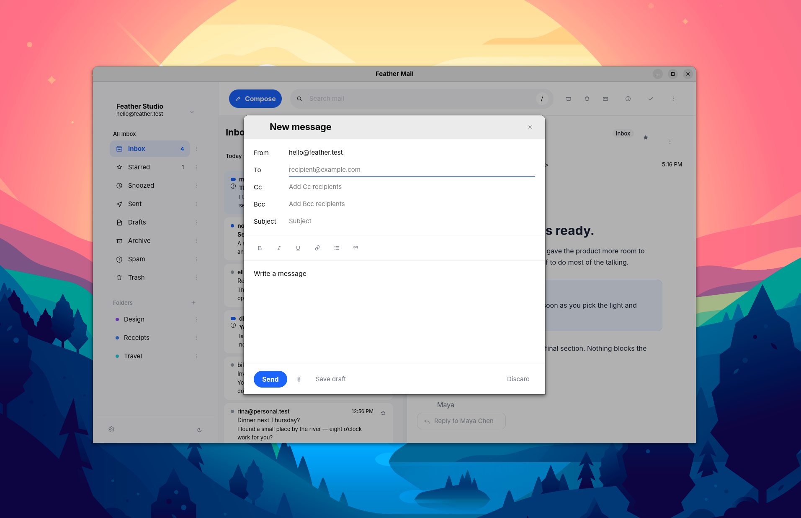
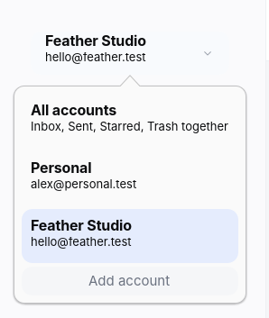

Open, then sync
Your inbox appears from local cache while new mail arrives in the background. No blank page waiting on the network.
Fast. Minimal. Native.
Feather Mail opens from a local cache and keeps synchronization in the background. A focused Linux-native interface leaves you with the message, not the machinery.
GPL-3.0-or-later · x86_64 .deb and AppImage

Speed you can feel
Your inbox appears from local cache while new mail arrives in the background. No blank page waiting on the network.
Three calm panes, one clear accent and no engagement clutter. Several mailboxes become one simple workflow.
GTK4 controls and concise keyboard paths make compose, search, archive and reply feel immediate on Linux.

Minimal by design
Switch mailboxes, search every account or compose a reply without changing context. Offline actions wait quietly and continue when the network returns.

Private by construction
Open source · Linux native